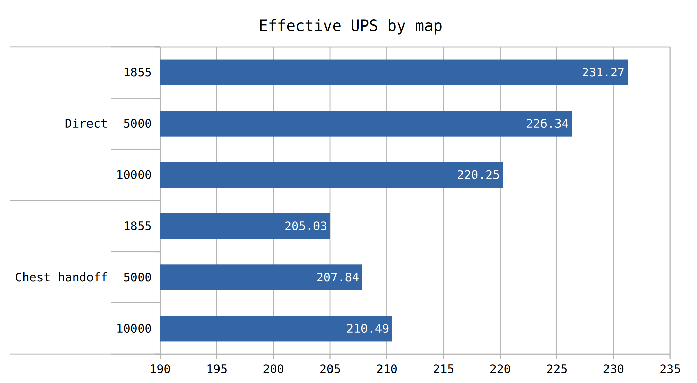

Mining directly into a furnace performed better. Increasing mining productivity further caused perfomance to degrade when mining directly into a furnace, but increased perfomance while mining into a chest. This assumes you maintain 1 furnace per miner.
On patch smelting is commonly seen in various designs. The original UPS Wars were fought and won with on patch smelting. While it is easy to complain about the size of the ore patches in those original UPS Wars, that is not why we are here today.
Specifically we are here to test the theory that mining directly into a furnace can have a reduction in performance relative to mining into a chest and then inserting the ore. Every time a furnace finishes a craft, entites connected to its wakeup list are woken up. For miners, they wake up and also realise they need to begin mining. This wakeup as additional work associated with it (producing and moving the ore). Additionally, the miner can end up thrashing, where it activates and deactivates in quick succession. A future test will cover miners thrashing in another case: belts.
Compare that behavior to the inserter case. When a craft is finished, an inserter wakes up. Out of every 12 times a furnace wakes up, only 1 time does that inserter actually swing and insert items. The inserter still wakes up every craft, which is not ideal, but it in theory goes back to sleep without much expense. The miner as well is only active after the inserter takes the items. This is one continuous activation for 12 items, rather than 12 separate activations for 1 item each. This reduces thrashing behavior on the miner further, increasing the possiblity that this scenario performs better. It is also theorised that at higher mining productivity, thrashing becomes more of an issue.
This test will consist of 10,000 furnaces. Output of plates will occur directly into an infinity void chest. Testing will be conducted at 1855, 5000, and 10000 mining productivity research level. This captures the (a)typical range where the theoretical perfect megabase would be. This test has furnaces at 8 beacons of coverage. The coverage level shouldn't make a signifigant difference for the variable we are testing, though it would increase the overall entity wakeup counts.

The data gathered here shows direct furnace mining beats using a chest to filter work operations. The data also shows a clear trend by which it could be theorised there is a crossover point in terms of mining productivity. It's possible mining into a chest beats direct furnace mining if you get 2 furnaces per miner, as well. Especially if such a design can be crafted to be train tilable for easy plate loading.
Overall, the results here show the two competing designs to be quite similar in nature. It is possible that a design more tailored to the strength of mining with a chest filtering miner activations would perform better.